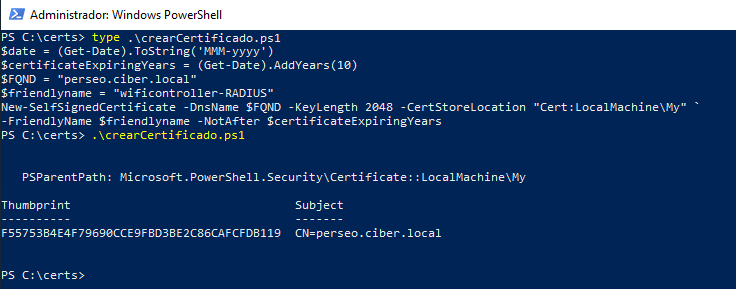
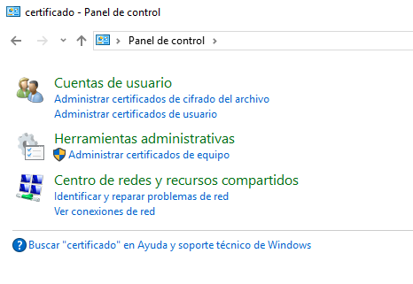
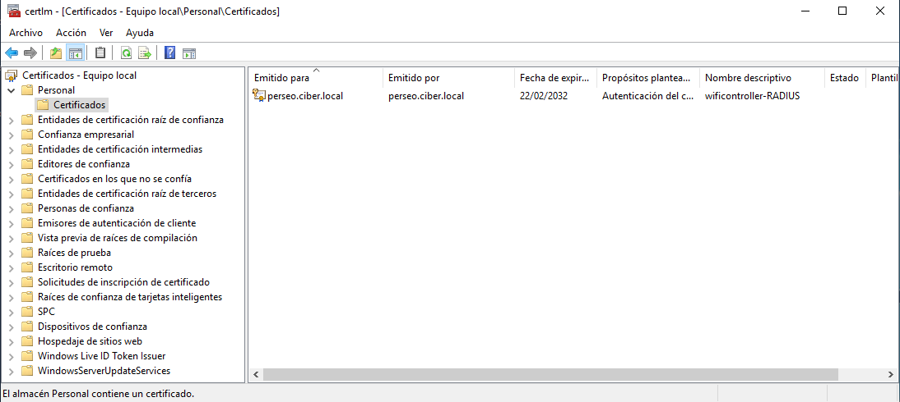
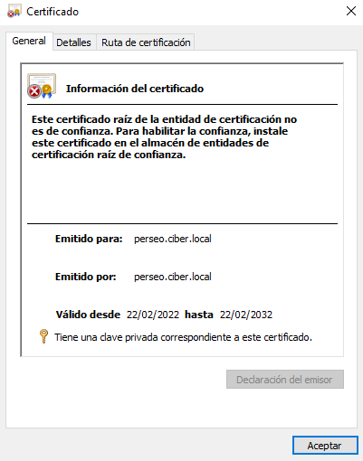
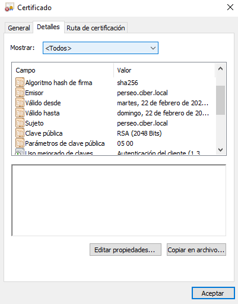
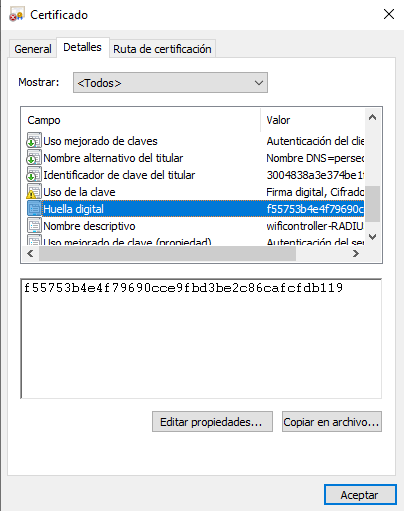
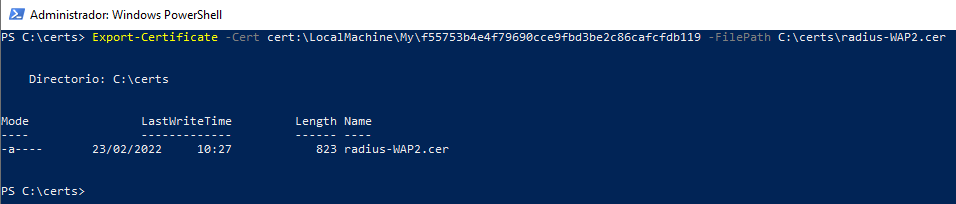

3.3.1 Crear un certificado de equipo autofirmado
1. Introducción
Para este escenario no se va a implementar una infraestructura PKI/CA o adquirir un certificado de un proveedor externo. Lo que se va a realizar es, utilizar certificados autofirmados con fines de prueba aunque también serían válidos para proporcionar certificados para servicios de Intranet internos (IIS, Exchange, Proxy de aplicación web, LDAPS, ADRMS, DirectAccess, etc.).
Se puede obtener fácilmente un certificado SSL gratuito de Let's Encrypt.
2. Proceso
Para crear el certificado de equipo autofirmado, se puede realizar desde la interfaz gráfica o powershell. Para este caso, se hará uso de powershell donde se ha desarrollado un script crearCertificado.ps1 para la creación del certificado autofirmado para este escenario.
Para crear un certificado, hay que especificar los valores de –DnsName (nombre de un servidor, el nombre puede cualquiera) y -CertStoreLocation (un almacén de certificados local en el que se colocará el certificado generado). Para este caso, los datos son los siguientes:
- –DnsName. Es el FQDN del servidor - perseo.ciber.local.
- -CertStoreLocation: almacén de certificados local - Cert:LocalMachine\My.
- -FriendlyName
- -NotAfter: La vigencia del certificado será de 10 años.
El código del script es el siguiente:
$date = (Get-Date).ToString('MMM-yyyy')
$certificateExpiringYears = (Get-Date).AddYears(10)
$FQND = "perseo.ciber.local"
$friendlyname = "wificontroller"
New-SelfSignedCertificate -DnsName $FQND -KeyLength 2048 -CertStoreLocation "Cert:LocalMachine\My" `
-FriendlyName $friendlyname -NotAfter $certificateExpiringYears

Figura 1. Ejecución del script para crear el certificado.
Este script crea un nuevo certificado y lo importa en el almacén de certificados personales de la computadora. De forma predeterminada, se genera un certificado autofirmado con la siguiente configuración:
- Algoritmo criptográfico: RSA;
- Longitud de la clave: 2048 bits;
- Uso aceptable de claves: Autenticación del cliente y Autenticación del servidor;
- El certificado se puede utilizar para: Firma digital, Cifrado de claves;
- Período de validez del certificado: 1 año. Para este caso, mediante el parámetro -NotAfter se ha establecido la validez para 10 años.
Para consultar el certificado creado se puede ejecutar en la consola el complemento MMC certlm.msc o acceder a Herramientas administrativas y luego 'Administrar certificados de equipo' (Figura 2). A continuación, en la nueva ventana que aparece, hay que posicionarse en el nodo del árbol Certificados y seleccionar 'Inscribir y recuperar certificados automáticamente' (Figura 3).
|  |  |
| Figura 2. Acceso a la administración de certificados. | Figura 3. Comprobar el certificado creado. |
|  |  |
| Figura 4. Fatos generales del certificado. | Figura 5. Detalles del certificado. |
Exportar el certificado para distribuir a los clientes
La clave pública del certificado se puede exportar de la siguiente manera donde hay que especificar la huella digital del mismo:

Figura 6. Consulta de la huella digital.
El comando para exportar el certificado es el siguiente:
PS C:\ Export-Certificate -Cert cert:\LocalMachine\My\f55753b4e4f79690cce9fbd3be2c86cafcfdb119 -FilePath C:\certs\radius-WAP2.cer

Figura 7. Exportación del certificado.
3. Referencias
Obra publicada con Licencia Creative Commons Reconocimiento No comercial Compartir igual 4.0